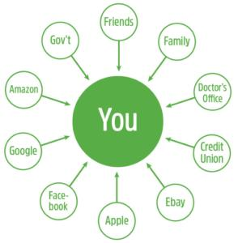

Android isn't enough. We need more. And not just of Linux.
Linux has long since proven it's possible for one operating system to work for everyone—also that there's an approach to development that opens and frees code so everyone can use it, improve it and assure its freedoms spread to everyone doing the same.
This has been great for computing at all scales. But, it hasn't been great for everybody, yet, because not everybody has access to hardware or software, but we can still help them out, our way.
What I'm suggesting here is that we conceive and develop new approaches to bringing the benefits of free and open-source computing, software and methods to everybody.
Let's start with the hardest cases: refugees' need for identification methods that don't depend on some country's or government's central system that either doesn't exist or can be used to screw or kill them. What's the best approach to that?
As of this writing (late May 2017), the UN Refugee Agency (UNHCR) says there are now 65.3 million forcibly displaced people in the world. Among those are 21.3 million refugees, of which more than half are under the age of 18. (See the UNHCR's data portal for particulars: data2.unhcr.org/en/situations.)
According to Unicef, one in three children under five years old in the world “does not officially exist” (https://www.unicef.org/media/media_71508.html).
There are many digital identity needs among these populations—for example, the need to connect with displaced and separated others. The need to disclose—or not disclose—religion or country of origin. The need to declare professional credentials or proof of expertise (such as ones that say convincingly that “I am a nurse”, or “I am a certified accountant”). The need to disclose helpful medical information selectively, such as blood type for transfusions. The need to open a bank account, or just to access funds. The list goes on, and it's a long one.
As human beings we are inherently distributed. All of us are single and separate entities with sovereign souls, by design, no matter what country we were born in or what tribe(s) we belong to. We look and sound different so we can tell each other apart, and so we know a few other humans deeply. Even identical twins, with identical DNA, have very different and distinctive souls and personalities, given to making very different choices in life—the transgender actress Laverne Cox (https://en.wikipedia.org/wiki/Laverne_Cox), for example, has an identical twin brother who is still happily male.
It is impossible to respect anything in the last paragraph fully inside a centralized identity system. All centralized identity systems exist for the convenience of institutions first and individuals second, third, or even not at all. Often it can greatly benefit an individual to have access to institutional records when they are needed. In the developed world, this is a civic and commercial grace. For those outside that world, especially refugees, those same systems may not exist or can present a great danger if they do. It all depends. That's why control of dependencies should be in the hands of the individuals themselves or trusted others. How can we make that work?
It helps that the Internet's base protocol, TCP/IP, gives us a distributed digital world where every node is inherently independent and able to pass data back and forth with every other node. This gives every individual what Archimedes called “a place to stand” where he could move the world, provided he had a lever long enough. Linux is one of those levers. We can invent and deploy many others as well. There are no limit on this.
It hurts that we chose client-server (which might as well be called slave-master) as the defaulted way to deploy the World Wide Web in the first place, and still today. Brian Behlendorf (brian.behlendorf.com), of the Linux Foundation's Hyperledger project (https://www.hyperledger.org), called client-server “the original sin” of the web when he spoke to Quartz's The Next Billion conference last October (https://qz.com/on/the-next-billion). Hyperledger is a global “open-source collaborative effort created to advance cross-industry blockchain technologies”. It also “incubates and promotes a range of business blockchain technologies, including distributed ledger frameworks, smart contract engines, client libraries, graphical interfaces, utility libraries and sample applications”.
Among Hyperledger's projects and frameworks (https://www.hyperledger.org/projects) is one called Indy (https://www.hyperledger.org/blog/2017/05/02/hyperledger-welcomes-project-indy) that uses what it calls a universal trust framework to provide “accessible provenance for trust transactions” (www.windley.com/archives/2017/01/a_universal_trust_framework.shtml). More specifically, it supports “user-controlled exchange of verifiable claims (www.w3.org/2017/vc) about an identifier” and “has a rock-solid revocation model for cases where those claims are no longer true”, adding “Verifiable claims are a key component of Indy's ability to serve as a universal platform for exchanging trustworthy claims about identifiers.”
Boring stuff, I know. Less boring is this:
Indy is all about giving identity owners independent control of their personal data and relationships. Indy is built so that the owner of the identity is structurally part of transactions made about that identity. Pairwise identifiers not only prevent correlation, but they stop third parties from transacting without the identity owner taking part since the identity owner is the only place pairwise identifiers can be correlated.
Figure 1. Indy gives identity owners independent control of their personal data and relationships.
Indy is based on open standards so that it can interoperate with other distributed ledgers. These start, of course, with public-key cryptography standards. Other important standards cover things like the format of the identifiers, what they point to and how agents exchange verifiable claims.
While all that sounds very First World-ish, it also was designed with refugees in mind. Phil Windley, chair and president of the nonprofit Sovrin Foundation (https://www.sovrin.org), which created Indy, addresses the issue here (www.windley.com/archives/2016/04/self-sovereign_identity_and_legal_identity.shtml):
Descartes didn't say “I have a birth certificate, therefore, I am.” We are, obviously, more than a legal identity. Nevertheless, the civil registration has been with us for almost four centuries and most of us cannot conceive of any basis for trusted identity independent of civil registration.
And yet, presently, 1.8 billion people are without this basic form of identity. As a result, they have difficulty getting basic government services. Most of these people are refugees displaced by war or territorial disputes, victims of famine or ethnic cleansing, outcasts from society, or victims of unscrupulous employers, smugglers, or organized crime. People who want to help them have difficulty because without legal identity they are illegible to state apparatus.
Then he advances a solution:
We are at a point in the development of identity that it is possible to develop and deploy technologies that allow individuals to create a self-sovereign basis for their identity independent from civil registration.
Such systems allow us to tease apart the purposes of the birth certificate by recognizing a self-sovereign identity independent of the proof of citizenship. This doesn't, by itself, solve the problem of providing legal identity since the self-sovereign identity is self-asserted. But it does provide a foundation upon which a legal identity could be built: specifically it is an identifier that a person can prove they control.
Sovrin/Indy is one of those. Four other efforts I know well in the space are Customer Commons (customercommons.org/terms), which will have terms that refugees—or anybody—can proffer, People Centered Internet (https://peoplecentered.net), the Internet Bar Association (https://www.internetbar.org) and iRespond (irespond.org). For example, Peter Simpson of iRespond tells me “We are combining our years of non-profit work in humanitarian identity using biometrics that work in resource-poor and remote areas of the world and linking that 'flesh to digital' with Sovrin's permission-based distributed ledger technology.”
To sum this up, I see two ways we (Linux Journal readers) can help solve the refugee crisis. One is by making it as easy as possible for individual refugees to enjoy the benefits of both self-sovereign and administrative identities, while minimizing the risks. The other is to make clear how valuable many refugees are to the countries that might welcome them.
Please think about what you can do to join in any of the many efforts afoot to bring to everybody the full benefits of Linux and Linux-modeled approaches to solving problems and maximizing the variety of solutions.
Every human being has value to others as well as to themselves. We are designed that way too. Let's make the most of that.